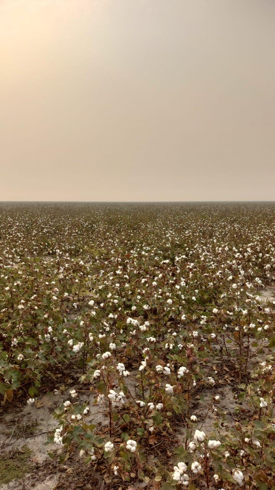
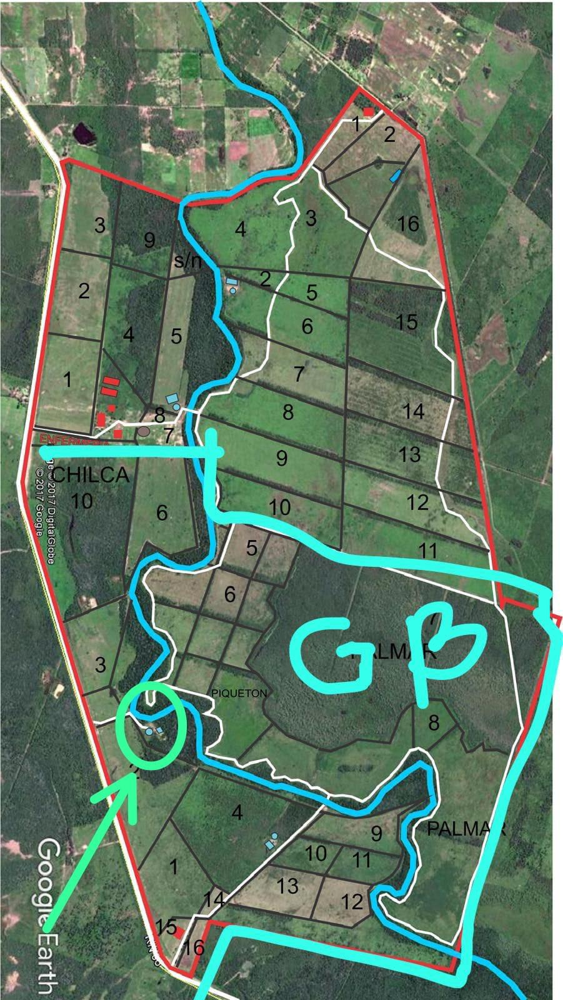
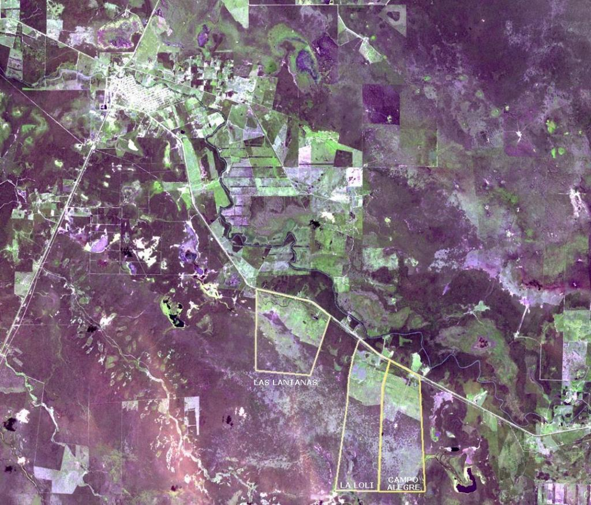

Gallo Blanco
Estancia Ganadera de 1.400 hectáreas en Formosa, Argentina
Superficie
1.400 ha
Ubicación
Ruta 86 pavimentada
Agua
Riacho Porteño
Pasturas
Subtropicales
Descripción de la Estancia
Gallo Blanco es una estancia ganadera de 1.400 hectáreas ubicada estratégicamente en Formosa, Argentina. Esta propiedad se destaca por su excelente ubicación y características naturales únicas.
Ubicación Estratégica
- • Lindero con Federación y Lite 10
- • Sobre Ruta 86 pavimentada
- • Acceso directo y fácil comunicación
Recursos Hídricos
- • Atravesado por el Riacho Porteño
- • Múltiples represas y tanques australianos
- • Excelente disponibilidad de agua todo el año
Características del Campo
- • Excelentes pasturas subtropicales
- • Buen apotreramiento
- • Campo limpio y bien mantenido
Infraestructura
- • Puesto de trabajo para encargado
- • Instalaciones funcionales
- • Potencialmente agrícola en un 70%
Plano de la Estancia

Haz clic en la imagen para ver el plano en pantalla completa
Plano Operativo

Plano operativo detallado de la estancia
Galería Multimedia
Imágenes Destacadas

Galería General


.jpeg)
.jpeg)
.jpeg)


.jpeg)


{kind=link}
{kind=link}
{kind=link}
{kind=link}
{kind=link}
{kind=link}
{kind=link}
{kind=link}
{kind=link}
Videos
Análisis de Suelos
INFORME ANÁLISIS SUELOS
Se realizó el recorrido de reconocimiento tomando puntos de referencia con GPS y con apoyo de imagen satelital y posteriormente se realizaron calicatas (pozos de alrededor de 1 m de profundidad) en los lugares considerados representativos de los paisajes.
La imagen computarizada de base es del satélite LANSAT 7, pancromática (escala de grises), de resolución de 15 metros de píxel (el doble de resolución de las usadas por INTA Saenz Peña), de fecha de 2 de octubre de 2001, apta para realizar mediciones de distancias y superficies.
Básicamente se pudieron diferenciar 4 ambientes o paisajes bien definidos, que representan 4 tipos de suelos que se marcan sobre la imagen con números: 1 - 2- 3 y 4. Ver imagen.
1 = ENTRADA = Se trata de un terreno alto en posición de loma, bien drenado, sin ningún peligro de anegamiento, permeable; el suelo encontrado presenta una capa superficial de color oscuro de 36 cm de espesor, de textura franco-arenosa, excelente estructura migajosa y granular, consistencia blanda, con alto nivel de materia orgánica, muy fértil; no presenta cambios texturales abruptos pero si gradualmente presenta mayores contenidos de arcilla en profundidad que le otorgan buena retención de humedad, con textura franco-arcillo-limosa después de los 70 cm donde presenta ligera de reacción de carbonatos en la masa.
Resumiendo= es un suelo de buena aptitud agrícola y/o para pasturas de alta producción con Capacidad de Uso = II (los mejores de la provincia) o III, esto se definirá (si es 2 o es 3) de acuerdo a los análisis principalmente de los niveles de salinidad del subsuelo.
2 = MONTE RALO BAJO CON GATTON PANIC IMPLANTADO = Esta ubicado en posición de relieve de media loma baja y presenta microrrelieves con depresiones que forman charcos en épocas lluviosas. El drenaje es moderado, con problemas de anegamiento solo en las microdepresiones. El suelo presenta una delgada capa superficial limosa, de color gris claro, de 8 cm de espesor, seguido de un cambio textural (horizonte B2) con mayor contenido de arcilla, esta capa se vuelve extremadamente dura e impermeable después de los 45 cm de profundidad y desde los 28 cm se presentan eflorescencias de sales, visibles a simple vista. La profundidad efectiva de raíces es escasa y también la capacidad de acumulación de agua es baja.
Resumiendo= es un suelo no apto para agricultura, por peligro de ocasionales anegamientos. La Capacidad de Uso es = VI sw (Clase 5, Es apto para pasturas adaptadas a las condiciones de sequías y anegamientos. Gatton Panic, Tanzania, Dicantium, Grama Rhodes.
3= PALEOCAUCE O RIO MUERTO = Se trata de antiguos cauces del Rio Pilcomayo colmatados que presentan vegetación de pastizal de gramíneas y leguminosas (pega-pega) anteriormente utilizadas para agricultura. Es un suelo medianamente apto para agricultura con peligro de sufrir excesos de humedad temporarios. Capacidad de Uso = III w o IV w (Clase 3 o 4).
4= ANTIGUO MONTE QUEBRACHAL = Desmontado extensamente con muy buena implantación de Gatton Panic. Con cortinas de monte mediano de quebracho colorado, quebracho blanco, guayacán, palo blanco, ñangapirí, y con extenso desmonte con excelente implantación de Gatton Panic y Grama Rodes muy buena receptividad para ganadería.
Resumiendo = es un suelo con limitaciones moderadas para agricultura. La Capacidad de Uso = V sw. Es apto para la implantación de pasturas
En cuanto a los suelos denominados: 2 = Monte bajo desmontado Su mejor vocación es para uso ganadero con muy buenas pasturas adaptadas a las condiciones de sequía y anegamiento; prueba de ello es la excelente pastura implantada y la natural que se desarrolla.
Se observó en los cordones del Monte Quebrachal desmontado que uno de los pastos naturales predominantes es del género Chloris. (Pariente cercano del Pasto Grama Rodes).
En las extensas áreas desmontadas y similares se han obtenido excelentes resultados con variedades de Grama Rodes como Katambora y Callide y variedades de Panicum maximum como Tanzania.
Ing. Heitor Gabohao Pino
INFORMACIÓN GENERAL DE ESTANCIAS
Régimen de lluvias: 700 a 1200 mm x año
Estado operativo: Estancia en plena capacidad operativa. Ideal para pastoreo rotativo con alta carga animal
Potencial de desarrollo: Gran potencial para multiplicación futura de más potreros vía más subdivisiones
Servicios básicos: Luz eléctrica e Internet disponibles
Acceso: Frente a ruta 86 pavimentada
Infraestructura: Gran apotreramiento. Buenas casas y puestos para personal. Múltiples aguadas, tanques, represas, perforaciones
Educación: Excelentes escuelas nuevas muy próximas a la estancia
Pasturas: Pasturas implantadas: Gatton Panic, Tanzania, Grama Rhodes, Dicantium, Pasto Pangola, Melilotus Alba, etc. Buenos pastos naturales
Alambrados: Alambrados periféricos y múltiples divisorios en muy buen estado de mantenimiento. Gran porcentaje de alambrados nuevos